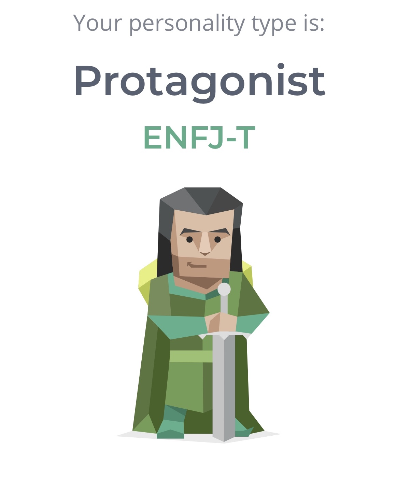

Personal Profile
16 Personalities Test
My results for the 16 Personalities test show the fact I am a “Protagonist” ENFJ-T. https://www.16personalities.com
Big Five Personality Test
O=85% C=69% E=65% A=60% N=73%

My Learning Style.
Then I took a test regarding my personal learning style which came out surprisingly equal along all of the branches.
- Auditory: 35%
- Visual: 35%
- Tactile: 30%
Auditory/Visual
I am mainly a cross between a Auditory and Visual learner this means that i need to sit where i can hear and see to be successful. I am suggested to use flash cards as it benifits me on two fronts both Auditory based on being able to say words our loud and Associate meaning aswell as visually see the card and read.
16 Personalities Test Link: www.16personalities.com
What’s Your Learning Style? Test Link: www.educationplanner.org